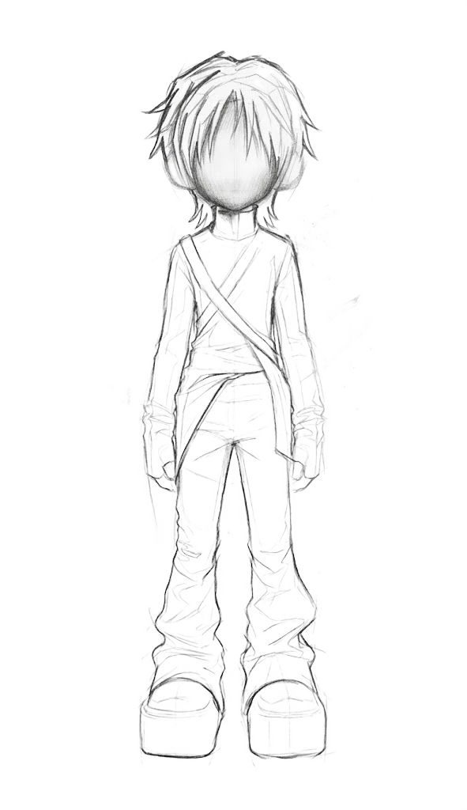
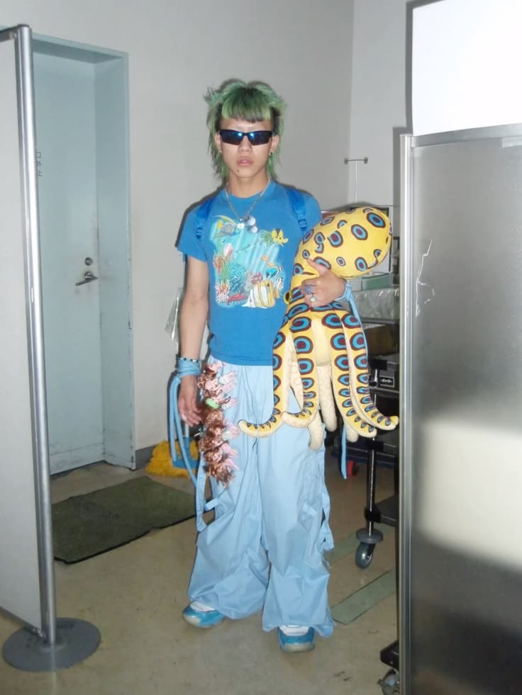

01. Name it.

어렴풋이 알고 있던
이미지를
설명할 수 있는
키워드로 정의합니다.
좋아하는 이미지를 모으는 데서 끝내지 마세요.
CHUGU는 어렴풋한 동경을 선명한 취향으로 정의하고,
그 취향을 당신의 일상으로 이어줍니다.
이름 없는 감각은, 다음으로 이어지지 않습니다. 취향을 설명할 언어가 없으면
검색할 키워드도, 찾아갈 장소도, 선택할 브랜드도 알기 어렵습니다.
탐색의 출발점을 찾지 못한 동경은 파편화된 이미지로 남고,
구체적인 계획이 없는 변화는 쉽게 미뤄집니다.
CHUGU는 당신이 선택한 이미지 속 공통된 패턴을 분석합니다.
스타일과 분위기, 공간, 태도와 라이프스타일을 연결해
감각적으로만 알고 있던 추구미를 구체적인 키워드로 정의하고,
더 깊게 탐색할 수 있는 방향을 제안합니다.

어렴풋이 알고 있던
이미지를
설명할 수 있는
키워드로 정의합니다.
취향이
옷이 되고
공간이 되고
일상이 됩니다.
원하는 모습은
더 이상
동경이 아니라
당신입니다.

#FrutigerAero